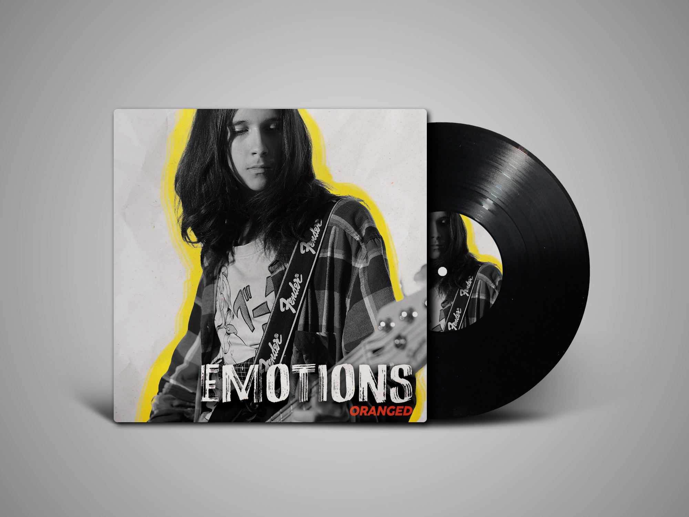
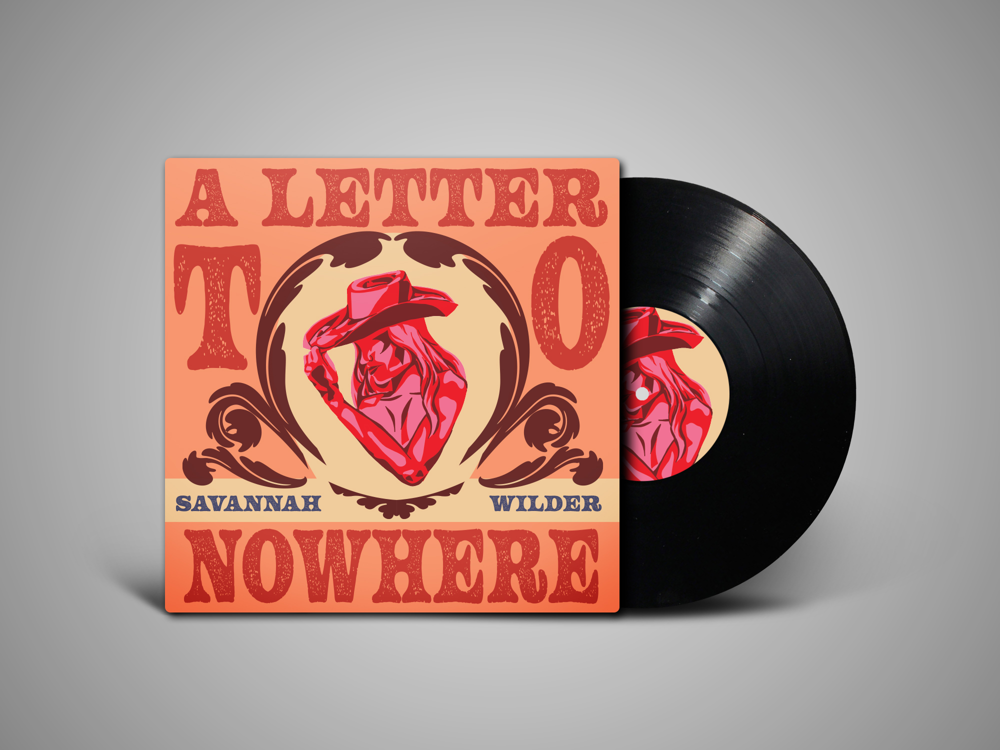
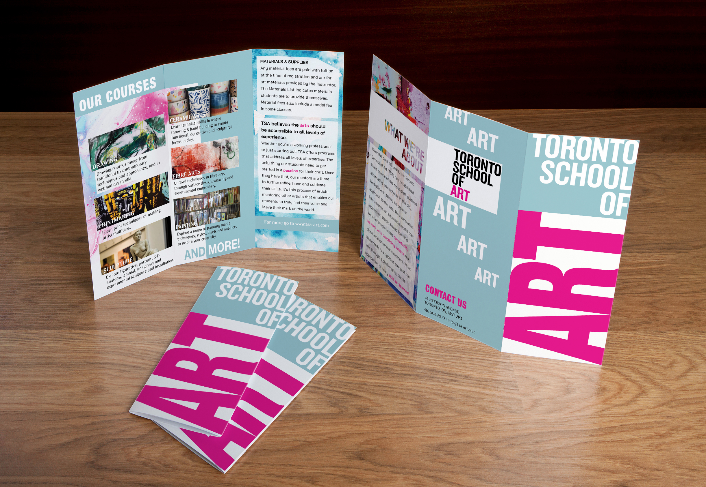
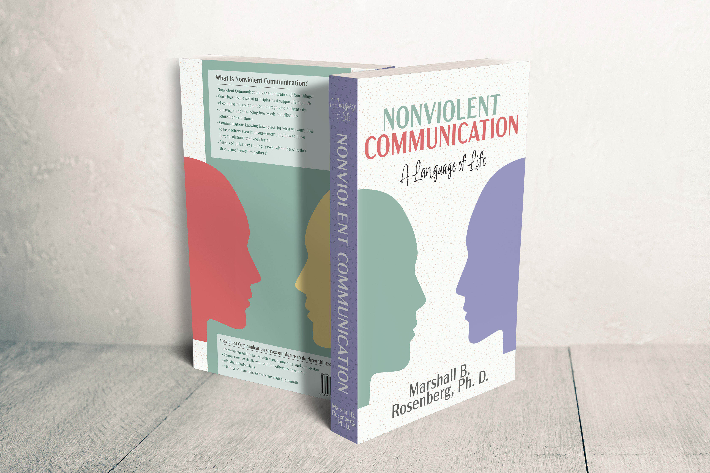
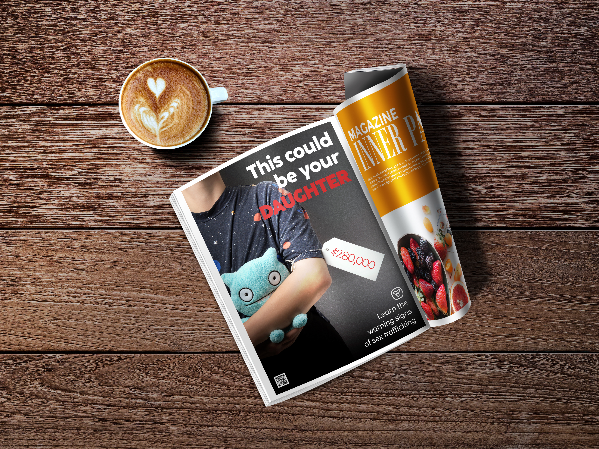

Video & Branding Project
Planty - Pitch Video
Professional pitch video for Planty, a fictional company I created with Maria Gomez. I led the visual storytelling, storyboards, directing, filming, and editing.
DetailsI help brands grow their audiences, increase engagement, and become more recognizable online through strategy-led social media content.
Managed social media for the biggest college in Canada
Oversaw 3 social media accounts for Humber Polytechnic's International Department and created content that helped grow engagement and reach prospective international students through student-focused, data-driven strategy.
Produced content for one of the strongest Canadian varsity teams
Worked with Humber Hawks Nation for nearly a year to turn varsity games and promotion events into professional photography, Instagram reels, and fan-engagement website.
Professional pitch video for Planty, a fictional company I created with Maria Gomez. I led the visual storytelling, storyboards, directing, filming, and editing.
DetailsA personal project focused on exploring my personal video style through cinemtic storytelling. The video focuses on the topic of what art means to me and shows my style in photography and videgraphy.
A short documentary-style video exploring hidden creative or unpopular spaces in downtown Toronto that inspire and connect local designers and artists.
Group Project: I led the visual direction, storyboarding, 80% of the filming, and editing in Adobe Premiere Pro & CupCut Pro.
A commercial advertisement for Marshall headphones that uses sound design and visual storytelling to highlight the brand’s distinctive aesthetic, audio quality, and connection to music.
Group Project: I was in charge of the overall direction, filming, and editing in Adobe Premiere Pro.
A projection mapping project for The North Face that transforms the brand’s logo through spring, summer, fall, and winter environments using animation, illustration, and projected motion.
DetailsA three-screen concert visual project featuring animated visuals, background motion graphics, and synchronized lyrics to support a live music performance.
DetailsA logo animation project for Humber Arboretum, recreating an existing logo as vector artwork and animating it into a final motion sequence.
DetailsA personal logo animation featuring a logo based on my name and photography theme, created as a motion introduction for a portfolio and personal branding.
Details

A vinyl cover design project exploring two different music genres through album artwork, packaging, and visual direction created for physical record.
Details

A design project with a brochure design for the Toronto School of Art and a book cover redesign for Nonviolent Communication, created for physical print media.
Details
A public service awareness campaign designed for print and digital media, translating a social issue into a series of advertisements for public, editorial, and online placements.
Details